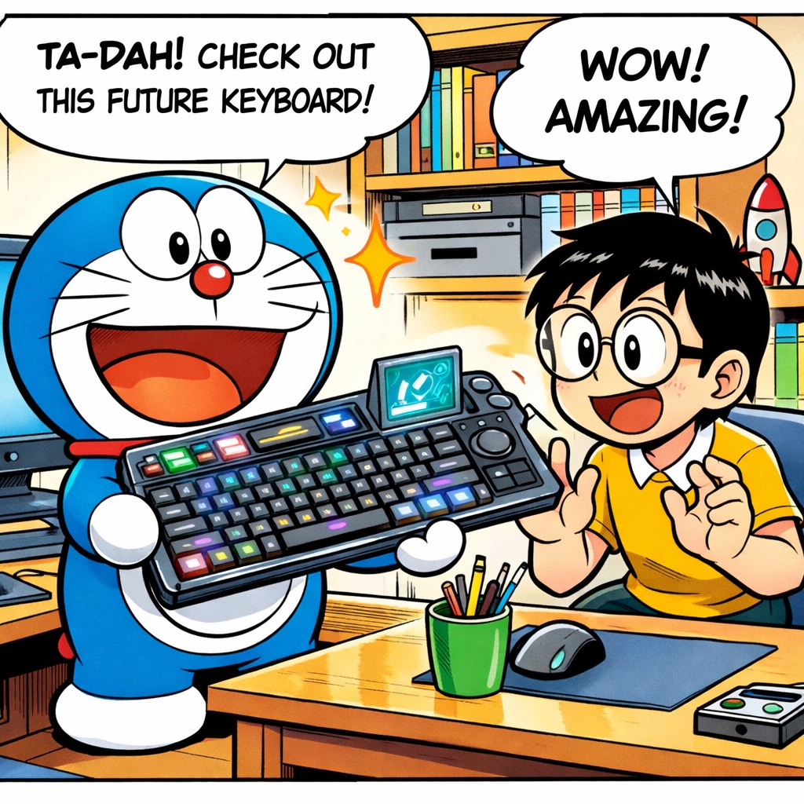
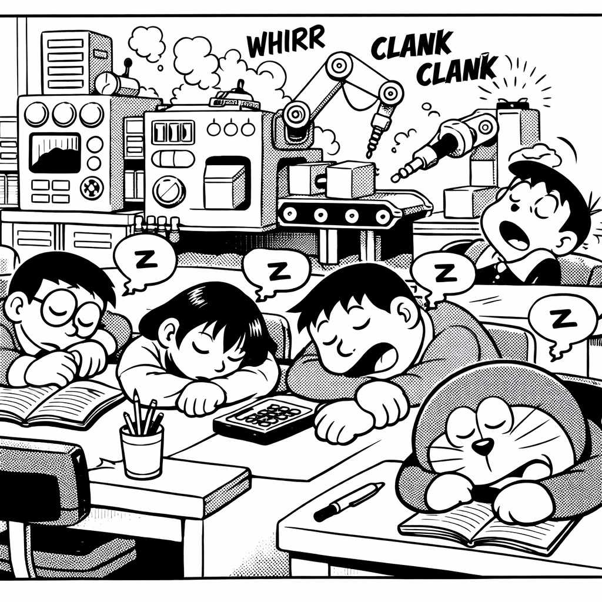
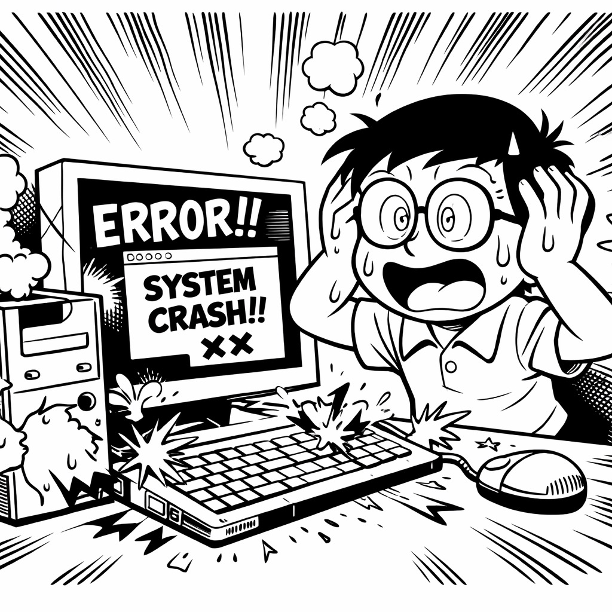
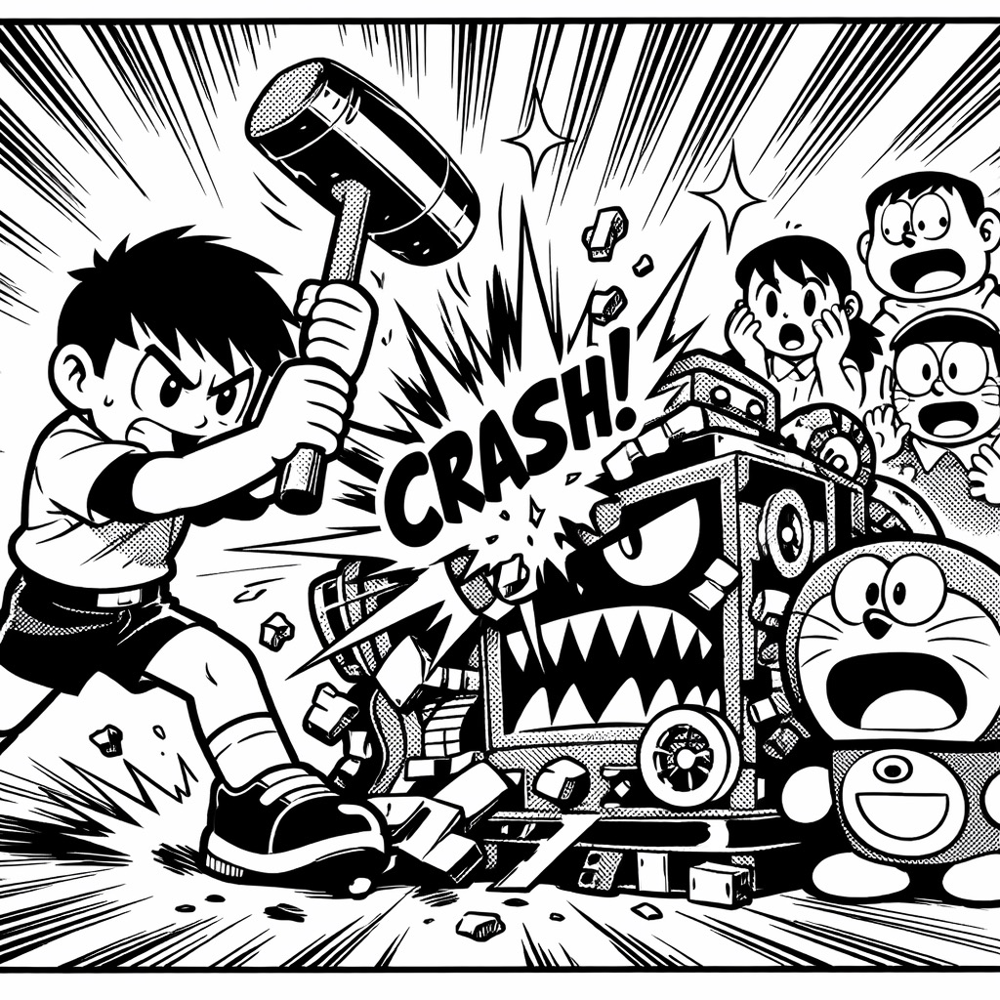
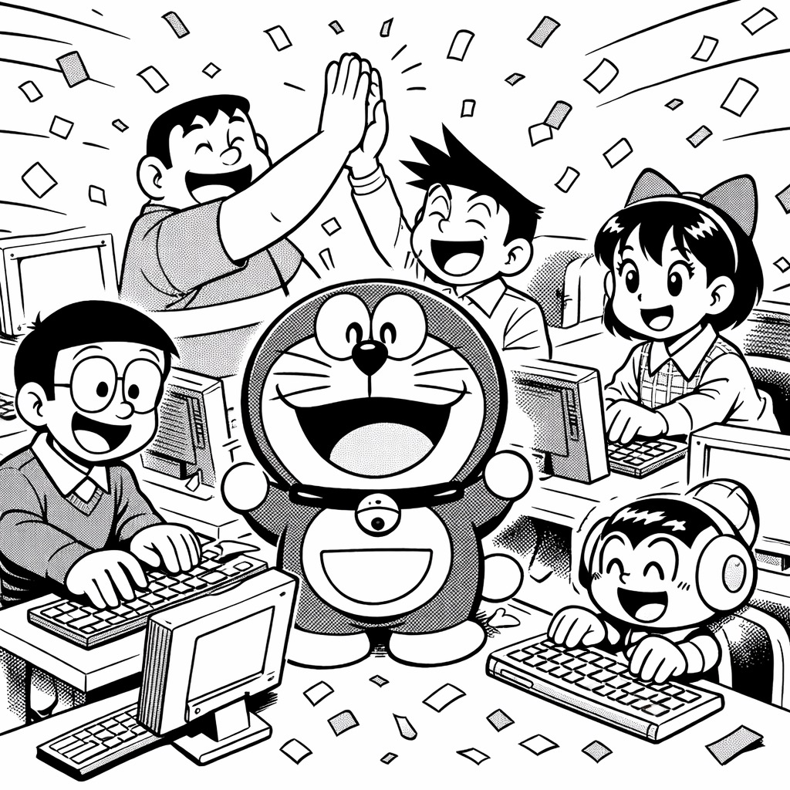

🤖 哆啦A梦 · 道具依赖症
「有些路，必须自己走」
第 1 格 · 天降神器

哆啦A梦从口袋里掏出一个闪闪发光的键盘：
「自动编程机！只要说出需求，它就自动写好代码！」
大雄眼睛亮了：「这不是传说中的……AI全自动程序员？！」
「噔噔噔噔——！」✨
大雄把键盘接到电脑上，对着它说：「给我做一个外卖小程序。」
三秒钟后——代码哗哗地自己跑出来了。
大雄：「我宣布，加班从今天起成为历史！」
第 2 格 · 集体躺平

三个月后——
大雄的创业团队：5个人，每天的工作变成了「对着自动编程机说需求」。
胖虎躺在椅子上打游戏：「以前一天写800行代码，现在一天说8句话就行了。」
小夫在网购：「我都忘了 for 循环怎么写了。」
静香在看剧：「反正机器会搞定的嘛。」
大雄在午睡。
哆啦A梦在角落里，默默叹了口气。
第 3 格 · 灾难降临

某天凌晨，自动编程机突然冒烟了。
「滋滋滋——砰！💥」
与此同时，最大的客户发来消息：
「你们的系统崩了！我的店今天接不了单！损失已经3万了！！！」
大雄慌了：「胖虎！快修！」
胖虎：「……我忘了怎么写代码了。」
小夫：「我也是。」
静香：「……」
大雄盯着黑屏的电脑，冷汗从额头滑下来。
五个人，没有一个人能写出一行能跑的代码。
第 4 格 · 砸掉拐杖

沉默了整整十秒。
大雄站起来，走到冒烟的自动编程机前。
然后——
他拿起锤子，狠狠砸了下去。
「砰！」🔨
胖虎：「大雄你疯了？！」
大雄：「不修了。这东西不砸掉，我们永远学不会自己走路。」
他转过头，看着团队每个人的眼睛：
「从今天起，每个人重新学写代码。从 Hello World 开始。」
静香小声说：「……会来得及吗？」
大雄：「来不来得及，走了才知道。」
🌟 BONUS · 三个月后

三个月后。
办公室里敲键盘的声音此起彼伏。
胖虎写了人生第一个不用AI辅助的完整功能模块，激动得拍桌子。
小夫调了三天的bug终于跑通了，对着屏幕比了个耶。
静香的代码被客户夸「逻辑清晰」，她截图存了下来。
新版本上线那天，大雄在群里发了条消息：
「这一版，每一行代码都是人写的。」
哆啦A梦看着他们，悄悄把自动编程机的碎片收进了口袋。
然后笑了。
「道具能帮你走捷径，
但走捷径的人，
永远到不了自己的目的地。」
—— 哆啦A梦 · 道具依赖症 · 完 ——